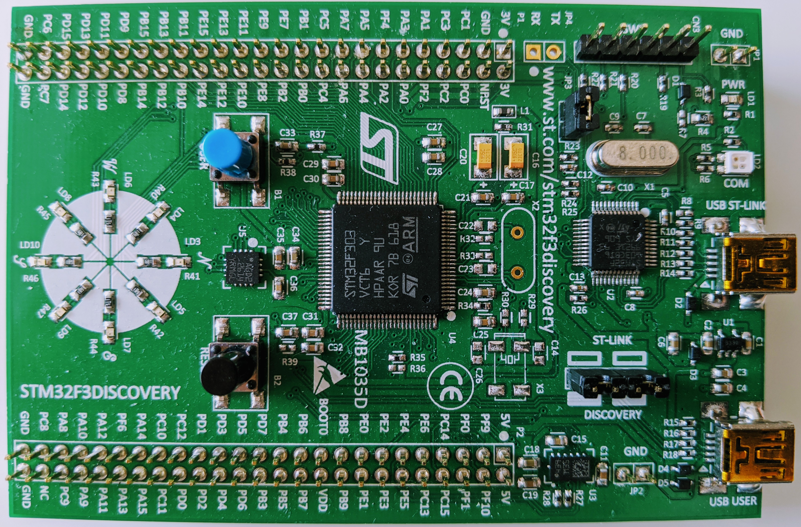

はじめに
この本は，Rustという言語を使って組み込みOSを書くための入門書です． Rustに限らず，他の言語でも（組み込み）OSの自作をしたことがない方や，組み込みシステムの開発経験やベアメタル環境でのプログラミング経験がない方でも理解できるように，なるべくわかりやすく，詳しく説明していきます． 読んでいく中でもし理解できないところがあったとしても，それで自信を失ったり諦めたりする必要はありません．新しいことに挑戦し，知識を取り入れるわけですから，分からないところがあって当然，全てを最初から理解するという方が難しいと思います． 分からないところは検索をかけてみたり，それでも分からなければ1回飛ばしてしまうのもありかもしれません． この本が少しでもあなたのお役に立てれば幸いです．
想定する読者
この本は，Rustを用いた簡単なプログラムを書いたことがある方や，Rustを用いたプログラミングに慣れている方を読者として想定しており，Rustという言語自体の仕様や，基本的な文法にはあまり触れません． Rustについての知識がまだ足りないと感じられる方は，こちらのドキュメント（日本語）や，本などを先にお読みになることをおすすめします．
その他，組み込み開発などに関する知識については必要ありません．
フィードバック
もし誤植や，内容に誤りを発見した場合は，是非Twitterなどでフィードバックしていただけると幸いです．
OSとは
OSという言葉は皆さんも聞いたことがあるでしょう．しかし，OSとは何かと聞かれると，なかなか説明が思いつかないという人は少なくないと思います．そこで，まずはOSの目的について説明します．
OSの主な目的には，ハードウェアの抽象化やリソースの管理などがあります．ハードウェアの抽象化というのは，ユーザやアプリケーションに対して標準的なインターフェースを提供する機能のことで，リソースの管理は，マルチタスクにおけるプロセスの管理などです．つまり，ハードウェアのすぐ上で実行され，これらの機能を果たしているものをOSと呼ぶわけです．
OSには，大きく分けて2種類のものがあります．1つは，汎用OS，そしてもう1つが組み込みOSです．とはいっても，最近ではLinuxが組み込み機器に使われることもあり，両者のはっきりとした境界はありません．順番に説明していきます．
汎用OS
OSというと，一般的に思い浮かべるのはWindows10やmacOS，Linux，Androidなどだと思います．これらは汎用OSと呼ばれるものです．汎用OSとは，文字通り，汎用的にさまざまな目的で利用できる機能をもったOSです．そのため，CPUやメモリなど，ハードウェアの性能が高いという特徴もあります．また，ユーザへのインターフェースとしての役割も非常に大きく，ファイルシステムなど，補助記憶装置を管理する仕組みや，さらにはウィンドウシステムなどのGUIを提供することもあります．
簡単にいうと，パソコンやスマートフォンなどに搭載されているようなOSのことを汎用OSと言います．
組み込みOS
組み込みOSは，家電製品や自動車やIoTデバイスなどに使われます．そのため，用途も必要な機能も限られており，使うハードウェアの性能もそんなに高くないことが多いです．組み込みOSでは，汎用OSのように，画面を用いた高度なインターフェースを提供することはあまりなく，マウスやキーボードによる入力を行うこともありませんが，リアルタイム性が重視されるという，汎用OSにはなかった特徴があります．リアルタイム性とは，ある入力に対して出力が行われるまでに，時間的な制約が設けられるということです．特にこの性能が求められるという場合には，RTOS（リアルタイムOS）と呼ばれることもあります．
筆者もあまり詳しくないので例をあげろと言われると難しいのですが，FreeRTOSやμITRONが有名な組み込みOSとしてあげられると思います．Rust製で言えば，Googleが開発したセキュリティキーにTockというRustで書かれたOSが使われています．
Haribote組み込みOS
本書で最終的に完成するOSは，割り込み制御，GPIOペリフェラルのAPI，マルチタスクを行うための簡単なスケジューラを実装したもので，実用性はありません．しかし，これから組み込みOSを作ろうとしている方や，組み込みOS，もしくはOSについての知識を深めたいと思っている方にとって，この本は足がかりになると思います．
使用するボード

この本では，STM32F3DISCOVERY（以下F3）というボードを使います．ただし，この本で使用する機能は多くないので，他のボードでも，適宜読み替えていただく必要はありますが，再現可能だと思います．
開発環境の構築
筆者はMacで動作確認をしていますが，WindowsやLinux環境でも構築可能です. 以下は，Macの場合の環境構築です．適宜ご自身の環境にあわせて読み替えてください．
Rust
以下のようにインストールします。
$ curl https://sh.rustup.rs -sSf | sh
これにより，cargo，rustc，rustupの3つがインストールされます．
cargo: ビルドシステム兼パッケージマネージャです．rustc: Rustのコンパイラです．rustup: Rustコンパイラのインストール/アップデートや，バージョン管理をしてくれるツールです．
今回はnightlyというリリースチャンネルを使うので，そのインストールも行います．
$ rustup install nightly
F3は，Cortex-M4Fプロセッサを搭載しています． クロスコンパイル用の環境を入れるために以下のコマンドを実行します．
$ rustup target add thumbv7em-none-eabihf
他のボードを使用している場合は，以下を参考にしてください．
thumbv6m-none-eabi: Cortex-M0，Cortex-M1プロセッサ向けthumbv7m-none-eabi: Cortex-M3プロセッサ向けthumbv7em-none-eabi: Cortex-M4，Cortex-M7プロセッサ向けthumbv7em-none-eabihf: Cortex-M4F，Cortex-M7Fプロセッサ向け
GDB
デバッガがなければ，組み込みシステムの開発は非常に難しいです．簡単なコマンドで使えますので，これを機会に習得してしまいましょう．
Homebrewを使ってインストールします．
$ brew tap armmbed/formulae
$ brew install armmbed/formulae/arm-none-eabi-gcc
OpenOCD
GDBは，F3上のST-Linkデバッグハードウェアと直接通信することはできません．OpenOCD（Open On-Chip Debugger）がGDBのTCP/IPベースのリモートデバッグプロトコルとST-LinkのUSBベースのプロトコルとの間に入って変換することで，GDBを用いたデバッグが可能になります．
こちらもHomebrewを使ってインストールします．
$ brew install openocd
接続確認
USBケーブルを使って，F3をPCに接続します．ボード端の中央にある"USB ST-LINK"と書いているところにケーブルを接続して下さい．
次のコマンドを実行してください．
$ openocd -f interface/stlink-v2-1.cfg -f target/stm32f3x.cfg
下のような出力が得られ，ターミナルがブロックされた状態になれば，接続できています．
F3以外を使っている場合は，あなたが使っているボードに合った引数をOpenOCDに与えることで同じように接続できます．
Open On-Chip Debugger 0.10.0
Licensed under GNU GPL v2
For bug reports, read
http://openocd.org/doc/doxygen/bugs.html
Info : auto-selecting first available session transport "hla_swd". To override use 'transport select <transport>'.
adapter speed: 1000 kHz
adapter_nsrst_delay: 100
Info : The selected transport took over low-level target control. The results might differ compared to plain JTAG/SWD
none separate
Info : Unable to match requested speed 1000 kHz, using 950 kHz
Info : Unable to match requested speed 1000 kHz, using 950 kHz
Info : clock speed 950 kHz
Info : STLINK v2 JTAG v27 API v2 SWIM v15 VID 0x0483 PID 0x374B
Info : using stlink api v2
Info : Target voltage: 2.901598
Info : stm32f3x.cpu: hardware has 6 breakpoints, 4 watchpoints
OpenOCDを終了するには，Ctrl+Cを押します．
RTFM
低レイヤーでのシステム開発では，マニュアルを読むということが重要です．この本でも，至る所でマニュアルを参照します．OSの上で動くプログラムを書くときとは違い，ハードウェアが抽象化（今度はこれは私たちがします！）されていないからです．読む必要がある部分だけでいいので，マニュアルを読み，ハードウェアの仕様を把握しましょう！
皆さんも，このドキュメントと一緒に，横に，これらのマニュアルを開いて読み進めていただくことを推奨いたします．
以下は，F3を用いる場合に参照するマニュアルですので，違うハードを使っている場合は，そのマニュアルを用意してください．
- Arm®v7-M Architecture Reference Manual（以下Armv7-m Manual）: ボードに乗っているCPUの基本的な仕様書です．アセンブラ命令の解説や，割り込みが発生したときの挙動，システムレジスタの仕様などが書かれています．
- ARM Cortex-M4 Processor Technical Reference Manual Revision r0p1 Documentation（以下Cortex-m4 Manual）: Arm v7-Mの仕様に基づいたアーキテクチャであるCortex-M4のマニュアルです． 割り込みコントローラやメモリ保護機構などの解説があります．
- STM32F303xB/C/D/E, STM32F303x6/8，STM32F328x8，STM32F358xC，STM32F398xE Reference Manual（以下Peripheral Manual）: 今回使うボードのCPUのペリフェラル（周辺機器）のマニュアルです．
- STM32F303xB，STM32F303xC Datasheet（以下Datasheet）: CPUについての詳細です．
Hello, world!
前置きが長くなってしまいました．ようやく本題に入っていきます．何はともあれ，まずはHello, world!です．
プロジェクトの作成
いつも通り，cargoを使用して新しいプロジェクトを作ります．
$ cargo new haribote_embedded_os
$ cd haribote_embedded_os
このプロジェクトではnightlyrustを使うので，
rust-toolchainファイルを使ってそれを指定します．
$ echo "nightly-2020-04-21" > rust-toolchain
プログラムの実行
Hello Worldするためには，当然プログラムを動かさなければならないわけですが，OSがない環境では，どうすればプログラムを動かすことができるのでしょうか．
分からないときは，マニュアルを読みます．答えはPeripheral Manualに書いてあります．
3.5 Boot configurationを見ると，BOOT0の値が0のとき，Main Flash Memoryがブートエリアになると書いてあります．Datasheetの5 Memory mappingを見ると，Flash Memoryは0x0800 0000番地から始まると書いてあります．これでブートエリアの場所がわかりました．
次に，Armv7-m Manualを見てください．
これがなかなかに分かりにくいんですが，B1.5.5 Reset behaviorの疑似コードを読むと，このように書いてあります．
TakeReset()
...
bits(32) vectortable = VTOR<31:7>:'0000000';
SP_main = MemA_with_priv[vectortable, 4, AccType_VECTABLE] AND 0xFFFFFFFC<31:0>;
...
tmp = MemA_with_priv[vectortable+4, 4, AccType_VECTABLE];
...
BranchTo(tmp AND 0xFFFFFFFE<31:0>); /* address of reset service routine */
SP_mainについては後で触れます．
疑似コードに登場したVTORについては，B3.2.5 Vector Table Offset Register, VTORに説明が書いてあります．この値が0というのは，メモリのコード領域の最下位部分（開始アドレス）にVector Tableを配置するということです．
コード領域の開始アドレスがどこだったか覚えていますか？
0x0800 0000番地ですね．
ここまでで，Vector Tableが0x0800 0000番地に配置されることが分かりました．
疑似コードをもう1度見てください．最後にvectortable+4にBranch（jump）しています．
よく見ると0xFFFFFFFEとのANDをとっていますが，重要ではないので気にしなくて大丈夫です．
リセット後，諸々の処理の後に実行される場所がvectortable+4だということが，何となく読み取れたところで，次に，このVector Tableについてもう少し詳しく見ていきましょう．
ベクタテーブル
Armv7-m ManualのB1.5.3 The vector tableとB1.5.2 Exception number definitionを見ると，Vector Tableの中身が分かります．以下の表に，Vector Tableの構造を示します．
| 例外番号 | アドレス | ベクタ |
|---|---|---|
| - | 0x00 | SP_main（Main stack pointer） |
| 1 | 0x04 | Reset |
| 2 | 0x08 | NMI |
| 3 | 0x0c | HardFault |
| 4 | 0x10 | MemManage |
| 5 | 0x14 | BusFault |
| 6 | 0x18 | UsageFault |
| 7~10 | 0x1c~0x28 | Reserved |
| 11 | 0x2c | SVCall |
| 12 | 0x30 | DebugMonitor |
| 13 | 0x34 | Reserved |
| 14 | 0x38 | PendSV |
| 15 | 0x3c | SysTick |
気になることがいくつかあるでしょう．順番に見ていきます．
まず，先ほどの疑似コードで登場していたのに無視していた，SP_mainが0x00にあります．これはコードの内容とも矛盾しませんね．SP_mainについてはまた後で触れます．
次に移ります．先ほど，リセット後に実行される場所がvectortable+4だと言った話を覚えていますか？表の0x04を見ると，確かにResetと書いてあります！話がつながってきました．
ずばり，Vector Tableの正体は，例外ハンドラのエントリーポイントの集まりです．
例外が発生すると，該当する番号の例外ハンドラが呼ばれます．分かりにくいかもしれないので，リセット例外を例に説明しましょう．
リセット例外（1番）は，最も優先度が高い例外なので，リセット例外が発生すると，他のどんな処理が実行されている時であっても，その処理は中断し，（先ほどの疑似コードのような処理が行われた後で）Resetハンドラに処理が移ります．
リセット例外は，電源を入れた直後や，リセットボタンを押した時に発生します．
というわけで，Vector Tableの2つ目のエントリーにプログラムを置けば，実行できそうです．
SP_main
ずっと後回しにしてきたSP_mainの説明です．SP_mainっていうのは皆さんの思っている通りスタックポインタのことなんですが，実はこのArmv7-mアーキテクチャでは，スタックが2つ存在します．メインスタックとプロセススタックです．SP_mainは，そのうちのメインスタックのポインタです．
スタック
分からない方もいると思うので，スタックについて簡単に説明します． スタックというのは，簡単にいうと，今の状態を一時的に退避する場所で，イメージ的には上に積み重ねていく形になります．1番最後に積んだものが1番上にあるので，取り出す時も，1番最後に積んだものから取り出されていきます．
この特徴から，スタックのデータ構造は，
LIFO(Last-In，First-Out)と呼ばれます．
どんな時に，どんな風にこのスタックを使うかというと，例えば，関数呼び出しのときなどです．関数Aの処理の中に，関数Bを呼び出す処理があったとしましょう． よくある状況ですよね．
プログラムを実行するとき，コンピュータはレジスタという物を使います．これは，一時的な計算結果などの値を保存するための変数のような物です．しかし，このレジスタは，無限にあるわけではなく，Armv7-mでは，15個くらいしかありません．しかも，このうちのいくつかは特殊な用途に使われるため，全てを自由に使えるわけではありません．つまり，これらレジスタは使い回す必要があります．
仮に，関数Aではレジスタを10個，関数Bでもレジスタを10個使うとしましょう．合計すると，明らかに足りません．かと言って，関数Bにジャンプする際に，使ってたレジスタの値を捨ててしまうと，関数Bが終わり，関数Aに戻ってきた時に，関数Aのさっきまでの計算結果が全部パーなってしまってるので，処理を再開できません．
そこで登場するのが，スタックです．関数Bに飛ぶ前に，関数Aと関数Bで被ってるレジスタがある場合は，その値を，一旦別のところ，つまりスタックに退避します．言っていませんでしたが，関数Aにおける，関数Bを実行した後の次の命令のアドレスも保存しておかないと，関数Aに戻ってくることができなくなるので，この値（PCレジスタの値）もスタックに積んでおきます．
関数Bが終わった後，関数Aに戻ってくる際に，スタックの1番上から順番にこれらの値を取り出して，レジスタに書き戻すことで，正常に関数Aに復帰できるわけです．
話を一気に戻しますが，このスタックが，Armv7-mでは2種類あるということです．リセットの後や，ハンドラモード（今は聞き流してください）では，メインスタックが使われます．
ここまでスタックの1番上という言い方をしてきましたが，この1番上のところのアドレスを指すのがスタックポインタです．SP_mainは，メインスタックのスタックポインタです．
ふー！そろそろ疲れてきた方もいるのではないでしょうか．この章は，実は全体の中で多分最も内容が多くて重い章ですので，ここまでこれば安心です．
お疲れ様でした．次はいよいよ，この章で確認したことを元に，プログラムを書いていきます！
メモリ上の配置
まずは，前回の章の内容を忘れないうちに，ベクタテーブルをメモリ上の正しい位置に配置する必要があります．そこで登場するのが，リンカスクリプトです．
プロジェクトのルートディレクトリに，link.ldというファイルを作成します．
$ touch link.ld
リンカスクリプト
リンカスクリプトの書き方についての説明はあまりしませんが，そんなに難しくないので，やってることがわかれば大丈夫です．説明よりも先に見た方がいいと思うので，先にスクリプトを載せて，後から説明をしていくという方式にします．以下の内容を，link.ldに書き込みます．
MEMORY
{
FLASH : ORIGIN = 0x08000000, LENGTH = 256K
RAM : ORIGIN = 0x20000000, LENGTH = 40K
}
ENTRY(Reset);
SECTIONS
{
.vectors ORIGIN(FLASH) :
{
LONG(ORIGIN(RAM) + LENGTH(RAM));
KEEP(*(.vectors.exceptions));
} > FLASH
.text :
{
*(.text .text.*);
} > FLASH
.rodata :
{
*(.rodata .rodata.*);
} > FLASH
.bss (NOLOAD):
{
_sbss = .;
*(.bss .bss.*);
_ebss = .;
} > RAM
.data : AT(ADDR(.rodata) + SIZEOF(.rodata))
{
_sdata = .;
*(.data .data.*);
_edata = .;
} > RAM
_sidata = LOADADDR(.data);
/DISCARD/ :
{
*(.ARM.exidx .ARM.exidx.*);
}
}
PROVIDE(NMI = DefaultExceptionHandler);
PROVIDE(HardFault = DefaultExceptionHandler);
PROVIDE(MemManage = DefaultExceptionHandler);
PROVIDE(BusFault = DefaultExceptionHandler);
PROVIDE(UsageFault = DefaultExceptionHandler);
PROVIDE(SVCall = DefaultExceptionHandler);
PROVIDE(PendSV = DefaultExceptionHandler);
PROVIDE(SysTick = DefaultExceptionHandler);
順番に見ていきましょう．
MEMORY
最初にMEMORYブロックです．ここでは，メモリ空間の定義を行なっています．
一般に，マイコンのメモリは2種類のメモリから構成されています．1つはROM，もう1つはRAMです．
ROM
ROM（Read Only Memory）は，電源を切ってもデータが消えない読み出し専用のメモリです．主に、電源投入時，リセット時に実行するプログラムや，プログラム実行中に変化しない定数を保存します．マイコンでは，多くの場合，フラッシュメモリをROMとして搭載しています．
RAM
RAM（Random Access Memory）は，データの読み書きは自由に行えるが，電源を切ると内容が消えるメモリです．主に，実行中のプログラムの変数などを保存します．
これら2つのメモリを用いて，プログラムを動かすので，私たちは，コンパイラにこれらのメモリのアドレスを教える必要があります．
Datasheetの5 Memory mappingを見ると，FLASHの領域は0x0800_0000から始まっていることがわかります．また，3.3 Embedded Flash memoryによると，サイズは256 Kbytesであることがわかります．
RAMも同様です．5 Memory mappingを見ると，FLASHの領域は0x2000_0000から始まっていることがわかります．3.3 Embedded Flash memoryによると，サイズは40 Kbytesであることがわかります．
MEMORY
{
FLASH : ORIGIN = 0x08000000, LENGTH = 256K
RAM : ORIGIN = 0x20000000, LENGTH = 40K
}
ENTRY
エントリーポイントの定義を行います．コンパイラに，エントリーポイントの場所を教えます．まだコードを書いてないのですが，Resetという関数をエントリーポイントとします．このエントリーポイントは，ベクタテーブルのResetベクタとしても使います．
ENTRY(Reset);
SECTIONS
SECTIONSでは，プログラムを作成する際に配置の基準となる，セクションと呼ばれる単位が，実際メモリのどこに置かれるのかを記述します．主に次のような感じになっています．
SECTIONS {
セクション名 : {} > メモリ領域名
コマンド
...
}
セクション名の中には，用途が決まっている物がいくつかあるので，それを表で示します．
| セクション名 | 説明 |
|---|---|
| .vectors | 割り込みベクタが配置されます． |
| .text | プログラムのコード（関数）が配置されます． |
| .rodata | 読み出し専用のデータ（プログラムの定数）が配置されます． |
| .bss | 初期値を持たない静的変数などが配置されます． |
| .data | 初期値を持つ静的変数などが配置されます． |
順番に見ていきましょう．
FLASHに配置するセクションは，.vectors，.text，.rodataの3つです．
.vectorsは，前章で詳しく説明したVector Tableが配置される場所です．
最初のエントリが何か覚えていますか？SP_mainの初期値でしたね．前章でスタックには積み上がっていくというような表現をしましたが，CortexーM4では，正確には積み下がっていきます．難しい話ではないです．スタックにデータを積む際に，アドレスが減る方向に積まれていくということです．なので，SP_mainの初期値には，RAMの末尾のアドレスを指定します．
あとは例外ハンドラのエントリーが続くので，そこを.vectors.exceptionsとします．中身はあとでコードの方に書きます．
というわけで，FLASHに配置する3つのセクションはこのようになります．
.vectors ORIGIN(FLASH) :
{
LONG(ORIGIN(RAM) + LENGTH(RAM));
KEEP(*(.vectors.exceptions));
} > FLASH
.text :
{
*(.text .text.*);
} > FLASH
.rodata :
{
*(.rodata .rodata.*);
} > FLASH
RAMに配置されるセクションは，.bss，.dataの2つです．これら2つの領域は，プログラム中で値を書き換える必要があるので，RAMに配置する必要があります．プログラムからアドレスを参照できるように，ロケーションカウンタ（.）というのを使います．
.bss (NOLOAD):
{
_sbss = .;
*(.bss .bss.*);
_ebss = .;
} > RAM
.data : AT(ADDR(.rodata) + SIZEOF(.rodata))
{
_sdata = .;
*(.data .data.*);
_edata = .;
} > RAM
ロケーションカウンタに値を代入してるので，_sbssは.bssセクションの先頭アドレス，_ebssは.bssセクションの末尾アドレス，_sdataは.dataセクションの先頭アドレス，_edataは.dataセクションの末尾アドレスを指します．
SECTIONSブロックの最後の部分について説明します．
_sidataには.dataの，FLASH上での配置アドレスを代入します．
.dataの初期値は，.rodataセクションにあり，.rodataセクションはFLASH上にあります．
.ARM.exidxは使用しないので，/DISCARD/のブロックで破棄しています．
_sidata = LOADADDR(.data);
/DISCARD/ :
{
*(.ARM.exidx .ARM.exidx.*);
}
PROVIDE
リンカスクリプトの最後の部分です．PROVIDEは，弱結合シンボルと呼ばれるシンボルを生成します．該当する関数が見つからなかった場合は，これを代わりに使うということを指示します．
PROVIDE(NMI = DefaultExceptionHandler);
PROVIDE(HardFault = DefaultExceptionHandler);
PROVIDE(MemManage = DefaultExceptionHandler);
PROVIDE(BusFault = DefaultExceptionHandler);
PROVIDE(UsageFault = DefaultExceptionHandler);
PROVIDE(SVCall = DefaultExceptionHandler);
PROVIDE(PendSV = DefaultExceptionHandler);
PROVIDE(SysTick = DefaultExceptionHandler);
なんだか見たことある名前たちですね．これらは全てVector Tableで見た例外ハンドラです．それぞれの例外時の挙動を別々に定義すると大変ですから，該当する例外ハンドラの定義がなければDefaultExceptionHandlerという関数を共通して使いましょうっていう意味です．
2章連続でかなり長い内容になってしまいました．準備は整ったので，ついに次章でHello, world!します！
Hello, world!
まず，Cargo.tomlに，使用するクレートを記述します．[dependencies]のところを，下のようにしてください．
[dependencies]
cortex-m-semihosting = "0.3.5"
このクレートは，セミホスティングを行うためのクレートです． セミホスティングは，ARMターゲット上のアプリケーションコードから発行される入出力要求を，デバッガが実行されているホストコンピュータに伝達するメカニズムです．要するに，デバッグ用の出力を可能に提供してくれるクレートです．
では早速，コードを書いていきます．src/main.rsを開いてください．
printlnマクロを用いたHello, world!コードが書いてあると思いますが，このコードは今回は使えませんので，全部消してください．
println!が使えない？！
printlnマクロに限らず，stdクレートそのものが使えません．
stdクレートは，OSが基盤として存在していることを前提としているからです．ベアメタルでは，代わりにcoreクレートを使います．
mainが使えない？！
mainインタフェースも，OSの存在を前提としています．Armv7-mでは，Vector TableのResetベクタがエントリーポイントになることを思い出してください．ではコードを書いていきましょう．
まずは，stdやmainを使わないということをコンパイラに教えるために，main.rsの先頭に2つのアトリビュートを書きます．
#![no_main]
#![no_std]
次に，使用するモジュールをインポートします．
use core::ptr;
use cortex_m_semihosting::hprintln;
次に，リンカスクリプトで，Reset以外の全ての例外ハンドラをPROVIDEしていたことを思い出してください．これらを使うために，以下のように書きます．DefaultExceptionHandlerの定義も忘れてはいけません．
extern "C" {
fn NMI();
fn HardFault();
fn MemManage();
fn BusFault();
fn UsageFault();
fn SVCall();
fn PendSV();
fn SysTick();
}
#[no_mangle]
pub extern "C" fn DefaultExceptionHandler() {
loop {}
}
次に，Vector Tableの定義を行います．Reservedのところには，32bitのu32を置いておきましょう．便利なunionというものを使います．
unionは，共用体といって，メモリ空間を共有して型の違うメンバのうちどれか1つだけを持つことができるデータ構造です．union共用体を初めて聞いた方には，この説明では不十分かもしれないので調べてみてください．わかりやすい図が出てくると思います．
ベクタを以下のように定義します．
pub union Vector {
reserved: u32,
handler: unsafe extern "C" fn(),
}
Vector Tableは，下のようになります．（SP_mainはリンカスクリプトで定義したので，コードに書くのは2番目のResetベクタからですね．）
#[link_section = ".vectors.exceptions"]
#[no_mangle]
pub static VECTOR_TABLE: [Vector; 15] = [
Vector { handler: Reset },
Vector { handler: NMI },
Vector { handler: HardFault },
Vector { handler: MemManage },
Vector { handler: BusFault },
Vector { handler: UsageFault },
Vector { reserved: 0 },
Vector { reserved: 0 },
Vector { reserved: 0 },
Vector { reserved: 0 },
Vector { handler: SVCall },
Vector { reserved: 0 },
Vector { reserved: 0 },
Vector { handler: PendSV },
Vector { handler: SysTick },
];
#[link_section = ".vectors.exceptions"]というアトリビュートを用いることで，リンカスクリプトの中で.vectors.exceptionsと示したメモリ上の場所に配置することができます．
あとはResetハンドラの中身を書くだけですね．
まずは初期化処理を行う必要があります．初期化処理というのは，リンカスクリプトにおける.bssセクションの初期値を0にすることと，.dataセクションの初期値をFLASH上領域の.rodataからコピーすることです．
それが終わったら，やっとHello, world!を書けます！コードは下のようになります．
#[no_mangle]
pub unsafe extern "C" fn Reset() {
extern "C" {
static mut _sbss: u8;
static mut _ebss: u8;
static mut _sidata: u8;
static mut _sdata: u8;
static mut _edata: u8;
}
let count = &_ebss as *const u8 as usize - &_sbss as *const u8 as usize;
ptr::write_bytes(&mut _sbss as *mut u8, 0, count);
let count = &_edata as *const u8 as usize - &_sdata as *const u8 as usize;
ptr::copy_nonoverlapping(&_sidata as *const u8, &mut _sdata as *mut u8, count);
hprintln!("Hello, world!").unwrap();
// can't return so we go into an infinite loop here
loop {}
}
注意点が1つあります．Resetハンドラは，返らない（returnしない）ということです．そのため，loop{}で終わります．
cortex_m_semihosting::hprintlnマクロを使うことで，デバッガを介した出力を行います．
説明していないことが1つだけ残っていました．プログラムの随所にある#[no_mangle]というアトリビュートについてです．Rustのコードをコンパイルすると，変数や関数の名前は，リンカースクリプト内では別の名前（シンボル）に置き換えられてしまいます．これを，マングリングといいます．このアトリビュートをつけることによって，このマングリングを防ぐことができます．
さあ，あとはコンパイルするだけですね！やってみましょう！下のコマンドを実行します．
$ RUSTFLAGS="-C link-args=-Tlink.ld" cargo build --target thumbv7em-none-eabihf
RUSTFLAGS="-C link-args=-Tlink.ld"っていうのは，link.ldをリンカスクリプトとして使うという意味です．--target thumbv7em-none-eabihfは，生成するバイナリのターゲットアーキテクチャを指定しています．クロスコンパイルと呼ばれるものですね．
さて，コンパイルは通るでしょうか．
あれれ，通りません！エラー文が原因を教えてくれています．
`#[panic_handler]` function required, but not found
パニックハンドラがないと怒られています．パニックハンドラとは，異常終了時に実行されるハンドラです． OSのないベアメタル環境では，この異常終了時の動作を定義してあげる必要があります．
というわけで，main.rsの先頭のところにuse文を追加して，パニックハンドラを定義します．パニックハンドラには，#[panic_handler]アトリビュートをつけます．
use core::panic::PanicInfo;
#[panic_handler]
fn panic(_panic: &PanicInfo<'_>) -> ! {
loop {}
}
もう1度コンパイルしてみましょう！
Compiling hello_world v0.1.0 (...)
Finished dev [unoptimized + debuginfo] target(s) in 0.48s
通りました！早速F3に書き込みましょう．
今プロジェクトディレクトリ内にいるターミナルと，もう1つ別のターミナルを開いてください．OpenOCDの接続確認の時にしたのと同じように，F3をPCに接続し，そのターミナルで，次のコマンドを実行します．
$ openocd -f interface/stlink-v2-1.cfg -f target/stm32f3x.cfg
接続が確認できたら，元のターミナルに戻って，次のコマンドを実行します．
$ arm-none-eabi-gdb -q target/thumbv7em-none-eabihf/debug/haribote_embedded_os
正常にgdbシェルが開けたら次のコマンドを順番に実行してください．
(gdb) target extended-remote :3333
(gdb) monitor arm semihosting enable
(gdb) load
(gdb) continue
1行目で，OpenOCDを介してgdbデバッガをF3にアタッチし，2行目で，gdbからOpenOCDのセミホスティングを有効化しています．3行目のloadコマンドでプログラムをF3に書き込み，最後にcontinueで実行します．
ここで，OpenOCDを実行していたもう1つのターミナルに戻って，出力を確認してみましょう．
Hello, world!
Ctrl+Cでgdbの無限ループを止め，次のコマンドでgdbを終了できます．
(gdb) quit
OpenOCDも，Ctrl+Cで終了できます．
コマンドの省略
F3上でプログラムを動かすために，いくつかコマンドを実行しましたが，これらを毎回打つのは少し大変です．また，プログラムは，いつもF3上で実行するため，毎回gdbを起動するのも面倒です．ここでは，これらのコマンドを省略する方法を紹介します．
cargo build
コードをコンパイルする時，環境変数に値をセットしたり，クロスコンパイルのために--targetオプションをつけたりしました．これらを省略する方法を説明します．
まず，プロジェクトのルートディレクトリに，.cargoというディレクトリを作成し，そのディレクトリに，configというファイルを作成します．
$ mkdir .cargo
$ cd .cargo
$ touch config
次に，この.cargo/configに，以下のように記述します．
[target.thumbv7em-none-eabihf]
runner = "arm-none-eabi-gdb -q -x openocd.gdb"
rustflags = [
"-C", "link-arg=-Tlink.ld",
]
[build]
target = "thumbv7em-none-eabihf"
runner = "arm-none-eabi-gdb -q -x openocd.gdb"は，cargo runコマンドに対して，arm-none-eabi-gdb -q -x openocd.gdbを実行するということです．openocd.gdbファイルを作成する必要があります．プロジェクトのルートディレクトリに戻って，openocd.gdbファイルを作成してください．
$ touch openocd.gdb
次に，このopenocd.gdbに，以下のように記述します．
target extended-remote :3333
break Reset
monitor arm semihosting enable
load
continue
これで，設定は完了です．F3をパソコンに繋ぎ，OpenOCDを別のターミナルで実行したあと，cargo runコマンドを実行してみてください．
いきなりgdbシェルが現れたと思います．この時点でプログラムのロードは完了しており，Resetハンドラの先頭まで実行したところでbreakしたところです．あとはcontinueコマンドを実行するだけで，プログラムを実行できます！
(gdb) continue
Continuing.
カーネルとユーザ
カーネルというのは，OSの中核となるプログラムのことです．反対に，ユーザプログラムは，OSの上で実行されるプログラムです．もしユーザ空間で，全ての命令が実行できるような状態だと，実行するプログラムによっては，他のプロセスやOSが破壊される可能性があります．
そのため，ユーザー空間上のプロセスは，カーネル空間に直接アクセスすることができないようになっています．OSはシステムコールというAPIをユーザプログラムに提供し，ユーザプログラムは，そのシステムコールによってのみカーネル空間に間接的にアクセスすることができます．これにより，他のプロセスや，OSを守ことができるわけです．
この本では，カーネルで，ユーザプログラムのタスクスケジューリングを行います．タスクスケジューリングというのは，それぞれのタスクをどれくらいの時間実行して実行するタスクを切り替えるのかや，どういう順番でタスクを実行していくかなどの管理を行うことです．これを実装するためには，動作中のユーザプロセスを一旦停止させてカーネルに処理を移し，カーネルから次のタスクの実行を行うという仕組みが必要になります．
まずは簡単なマルチタスクを実装するため，ユーザプロセスが自らCPUの使用権を手放す仕組みを，システムコールで実現しましょう．
SVCall例外（システムコール）
armv7-mでは，システムコールを実装するために，SVCall例外という命令が存在します．Vector Tableで見かけましたね．SVCall例外は，svc命令という，ソフトウェアの命令で発生させることができる例外です．
一般的にOSには，複数のシステムコールが実装されており，OSによっては何十個から何百個のシステムコールが存在するOSもあります．しかし，この本で作るOSでは，前章で述べたシステムコール1つしか実装しません．svc命令は即値の引数を1つとることができますが，今回は引数の情報は使いません．
まずは準備として，Hello, world!の時のコードのSVCallを宣言してた部分をコメントにして，空っぽのSVCallハンドラを書きましょう．
extern "C" {
fn NMI();
fn HardFault();
fn MemManage();
fn BusFault();
fn UsageFault();
// fn SVCall();
fn PendSV();
fn SysTick();
}
#[no_mangle]
pub unsafe extern "C" fn SVCall() {
// カーネルに切り替える処理
}
次章で実装します．
コンテキストスイッチの実装
コンテキストスイッチを実装する前に，まずはカーネル空間とユーザ空間を定義します．Armv7-mには，特権モードと非特権モードが存在します．これに加えて，4.1章で少し説明したメインスタックとプロセススタックの使い分けも合わせて利用することで，カーネル空間とユーザ空間を定義しましょう．
カーネルプログラムでは特権モードでメインスタックを，ユーザプログラムでは非特権モードでプロセススタックを使うことにしましょう．
非特権モードでは，特権モードへの切り替えは行えないようになっています．（それができたらこの仕組みの存在意義がなくなるからです．）そこで，SVCall例外（システムコール）を利用します．例外ハンドラの中では，無条件に特権モードになります．
では，それぞれを切り替える方法を，順番に説明していきます．
特権モードの切り替え
非特権モードから特権モードへの切り替えは，特殊レジスタと呼ばれるレジスタの1つである，CONTROLレジスタを使います．特殊レジスタというのは，主に，特別な用途があるレジスタのことを言います．Armv7-m ManualのB1.4.4 The special-purpose CONTROL registerを見てください．0bit目の値によって，Thread modeでの特権/非特権を切り替えることができると書いてあります．Thread modeという言葉は初めて登場しましたが，難しい意味はありません．例外ハンドラの中がHandler modeで，それ以外はThread modeです．（しかし，リセット後は，Resetハンドラの中ではありますが，Thread modeです．）ですから，Thread modeの特権/非特権を切り替えることで目的は達成されます．特権モードに移行するにはCONTROLレジスタの0bit目を0にし，非特権モードに移行するには1にします．
使用するスタックの切り替え
使用するスタックの切り替えは，例外ハンドラから復帰するときに行うことができます．Armv7-m ManualのB1.5.8 Exception return behaviorおよびTable B1-8を見てください．先ほども確認したように，復帰先はThread modeです．カーネル空間に復帰したい場合はメインスタックを使用して復帰し，復帰先がユーザ空間に復帰したい場合はプロセススタックを使用して復帰します．したがって，ユーザに切り替える場合は特殊レジスタであるLRレジスタの値を0xFFFFFFFDにし，カーネルに切り替える場合は0xFFFFFFF9にします．これらの値は，EXC_RETURNと呼ばれます．
それぞれを切り替える方法はわかりましたが，もう1つ重要なことがあります．SVCall例外が，カーネル空間とユーザ空間のどちらで発生したかを確認しなければ，どっちに切り替えればいいかわからないということです．実は，通常の関数呼び出しの場合では，LRレジスタには戻り番地をセットしてジャンプするのですが，例外の場合は，戻り番地はスタック上に保存され，LRレジスタには，前述のEXC_RETURNの値がセットされます．よって，SVCallハンドラにおいても，単にLRレジスタの値を確認することで，svc命令がカーネルとユーザのどちらから発行されたかがわかります．
では，コードを書いていきましょう．
まず，main.rsの先頭に，アトリビュートを書き加えてください．これは，stableチャンネルにはない機能を使うときに必要な記述です．
#![feature(llvm_asm)]
次に，前章で空っぽだったSVCallハンドラを以下のように書き換えてください．
#[no_mangle]
pub unsafe extern "C" fn SVCall() {
llvm_asm!(
"
cmp lr, #0xfffffff9
bne to_kernel
mov r0, #1
msr CONTROL, r0
movw lr, #0xfffd
movt lr, #0xffff
bx lr
to_kernel:
mov r0, #0
msr CONTROL, r0
movw lr, #0xfff9
movt lr, #0xffff
bx lr
"
::::"volatile");
}
llvm_asmというマクロを使っています．これは，インラインアセンブラというもので，アセンブリ言語によるコードを埋め込むことができます．
llvm_asm!(
アセンブリのテンプレート
: 出力オペランド
: 入力オペランド
: 変更されるデータ
: オプション
);
というようにして使います． アセンブリ言語についてはここでは触れません．
コード内容は先ほど説明した通りです．msrは特殊レジスタに値を書き込む命令です．bx lrは，LRレジスタの値を元に，使用するスタックなどを切り替え，例外復帰処理を行います．
これで，カーネルとユーザを切り替える仕組みは実装しましたが，ユーザプロセスを生成，管理する仕組みがありません．いくらカーネルとユーザを切り替える仕組みがあっても，これがなければ何もできませんから，次章ではこの実装を行います．
プロセスの管理
前章でカーネルとユーザを切り替える仕組みを実装しました．ここでは，ユーザプロセスを生成，管理する仕組みを作っていきます．
この章の内容はとても大事な内容です．難しい内容もありますが，なるべく理解してから次の章に進むようにしてください．
私たちは，4章で作ったリンカスクリプトで，メインスタックポインタの初期値を，RAM領域の最後の部分としました．プロセススタックについても同じように，スタックのための領域を確保し，プロセススタックポインタの初期値を決めなければいけません．前章で実装したSVCallは，カーネルからユーザに切り替える仕組みを，プロセススタックを使って復帰することで実現していました．つまり，カーネル側で，ユーザプロセスのスタックの初期化を行い，そのあとでsvc命令を発行すれば，ユーザプロセスを実行することができるというわけです．
という訳で，ユーザプロセススタックの初期化を行っていきましょう．そのためにはまず，例外から復帰する際の動作を詳しく把握する必要があります．
例外復帰時の挙動
Armv7-m ManualのB1.5.7 Stack alignment on exception entryを見てください．一部のレジスタ（コンテキストと呼ばれる）は，下に示したような順番で例外発生時に自動的にスタックに退避され，それらは，復帰時に自動的にレジスタに書き戻されると書いてあります．
| Basic frame |
|---|
| xPSR |
| ReturnAddress |
| LR(r14) |
| r12 |
| r3 |
| r2 |
| r1 |
| r0 |
重要な値は，xPSRレジスタの値と，ReturnAddressの値です．ReturnAddressは，文字通り復帰先のアドレスです．xPSRレジスタとは，特殊レジスタの1つで，説明はArmv7-m ManualのB1.4.2 The special-purpose Program Status Registers, xPSRにあります．あまり重要ではないので詳しい説明はしませんが，今回は，24bit目のTbitを1にする必要があります．
これで，プロセスの起動方法がわかりました．順番に実装していきましょう．
まずは，プロセススタックの領域を確保します．マニュアルにも書いてあるとおり，この領域は，8バイトにalignされる必要があります．そこで，alignクレートを使用します．Cargo.tomlの以下の部分を書き換え，main.rsにプロセススタックの定義を加えます．
[dependencies]
cortex-m-semihosting = "0.3.5"
aligned = "0.3.2"
pub static mut PROCESS_STACK: Aligned<A8, [u8; 1024]> = Aligned([0; 1024]);
まずは，例外時にスタックからレジスタに自動でポップされるコンテキストを，構造体として定義しましょう．
#[repr(C)]
struct ContextBasicFrame {
pub r0: u32,
pub r1: u32,
pub r2: u32,
pub r3: u32,
pub r12: u32,
pub lr: u32,
pub return_address: u32,
pub xpsr: u32,
}
スタックに積まれる方向を考えると，構造体のメンバはこの順にするべきだということがわかります．しかし，1つ問題があります．Rustでは，コンパイル後，構造体内に存在するフィールドが，Rustのコード上の定義と同じ順番でメモリ上に並ぶとは限らないということです．しかし，今回は，この構造体のメンバがこの定義通りの順番で並ぶ必要があります．#[repr(C)]アトリビュートは，この問題を解決するためにこの構造体につけています．#[repr(C)]アトリビュートをつけると，メモリレイアウトがC言語の場合と同じになります．つまり，定義通りの順番で，メモリ上にフィールドが並びます．
次に，プロセスススタックの初期化を実装します．プロセスの状態を保持するための構造体を作りましょう．メンバには，プロセススタックポインタと，ハードウェアによって退避されない残りのレジスタ（r4〜r11）を退避するための配列を持たせます．
pub struct Process {
psp: u32,
regs: [u32; 8],
}
impl Process {
pub fn new(stack: &mut [u8], app_main: fn() -> !) -> Self {
let psp = (&stack[0] as *const u8 as usize) + stack.len() - 0x20;
let cbf: &mut ContextBasicFrame = unsafe { &mut *(psp as *mut ContextBasicFrame) };
cbf.r0 = 0;
cbf.r1 = 0;
cbf.r2 = 0;
cbf.r3 = 0;
cbf.r12 = 0;
cbf.lr = 0;
cbf.return_address = app_main as u32;
cbf.xpsr = 0x0100_0000; // T bit of EPSR = 1
Process {
psp: psp as u32,
regs: [0; 8],
}
}
pub fn switch_to(&mut self) {
unsafe {
llvm_asm!(
"
msr psp, r0
ldmia r1, {r4-r11}
svc 0
stmia r1, {r4-r11}
mrs r0, psp
"
:"={r0}"(self.psp)
:"{r0}"(self.psp), "{r1}"(&self.regs)
:"r4", "r5", "r6", "r8", "r9", "r10", "r11"
:"volatile"
);
}
}
}
プロセススタックの初期化を行うProcess::newは，使用するプロセススタックのアドレスと，ユーザプロセスとして実際に実行したい関数を引数にとります．引数にとる関数の方が，fn() -> !になっています．これは，その関数が決して終了することがないということを意味します．今回は，プロセスの強制終了や終了処理を実装しないので，ユーザプロセスとして実行するのは，終了しない関数に限定する必要があります．
プロセススタックポインタ（psp）の値に(&stack[0] as *const u8 as usize) + stack.len() - 0x20を代入しています．これはどういう意味でしょうか．4章でも述べた通り，cortex-m4では，スタックには積み下がっていきます．なので，プロセススタックポインタは，スタックの一番後ろを指す必要があります．0x20（32）を引いているのは，コンテキストの32バイト分がスタックに積んである状態がプロセスが実行される前の初期状態だからですね．プロセスは，svc命令によって，このスタックに積まれたコンテキストをレジスタに書き戻すことによって起動されます．
Process::newのその後の処理は，先ほどの説明通りですね．
Process::switch_toでは，実際にプロセスを起動します．msrは特殊レジスタに値を書き込む命令で，mrsは逆に特殊レジスタから値を読み込む命令です．ldmia/stmiaは，複数のレジスタを一括してロード/ストアする命令です．svc命令は，SVCall例外を発生させ，SVCallハンドラを実行します．
まず，pspにプロセススタックポインタの値を代入し，ハードウェアで自動的に処理されないr4〜r11レジスタの値を書き戻します．この処理は，プロセスの初回起動時には役に立ちませんが，1度実行した後カーネルに切り替わり，再びこのユーザプロセスに戻る時にはなくてはならない処理ですね．
最後に，ユーザからカーネルに処理が戻ってきた後に，今の状態のプロセススタックポインタの値の格納と，r4〜r11レジスタの退避を行います．